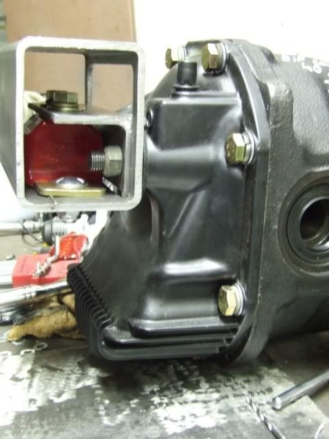

-
More better…Who needs new car's, Nissan had it right 30 years ago!!! -
thats mo' like it. -
Anyone know how hot the trans and diff pumpkin get? Is high temp paint needed? -
PAINT TECH: Painting a transmission,
Two of the most common reasons to paint any surface are; protection and appearance.
Heat emissivity (the ability of a surface to emit radiant energy) is another one.
Check http://tdmginc.com/fea_cfd_emmissivities.html for details.
Black surfaces emit more heat than bright shiny surfaces which are good at reflecting heat.
Formula 1 transmissions are black anodized.
The operating temperature of a daily driver standard transmission is 160 to 190°F.
A thick coating of a silver paint potentialy could raise the operating temperature of the transmission a couple degrees.
Aluminum transmission tend to easily discolor due to their rough surface and chemical contact.
Any coating will seal the surface and provide an easily cleanable surface.
Proper surface preparation is the key to a long lasting durable coat.
Coating aluminum requires specialized coatings due to the aluminum oxide which forms on the surface as soon as the aluminum is exposed to oxygen.
http://www.awlgrip.com/support-and-a…-aluminum.aspx
Powder coatings are the most durability.
Ceramic coatings require oven curing at 500°F and not advisable for aluminum.
Epoxies have the best adhesion to untreated aluminum surfaces but will yellow in sunlight..
Acrylic (poly) urethanes are non yellowing and and have good surface durability, second to Powder coatings
VHT Polyurethane Wheel Paint would be a good choice as it has good adhesion to aluminum and a maximum operating temperature of 250°F.
Also, look at VHT Metal Tint. -
Ah very helpful, thanks! I had painted my diff pumpkin with regular rustoleum black paint just to protect it from the elements.
I didn't even think about it getting too hot for the paint. Not sure if I should strip it and repaint it or just leave it as is. -
Leave it until it's a problem, stripping now vs later won't save you any work heh -
Perhaps. Though this diff is out of the car right now… but I'm inclined to think that it should be okay. -
Dupli Colour Ceramic Black 1200F engine paint is really good in these situations.
When not used on an engine or something that gets really hot it can be baked on with a heat gun or torch. I find it sticks to cast surfaces really well.
here is a sample of the finish on both alloy and cast iron
85 Turbo Slick Top
__________________________________________________ _____

Copyright © 2006–. All rights reserved. Privacy Policy